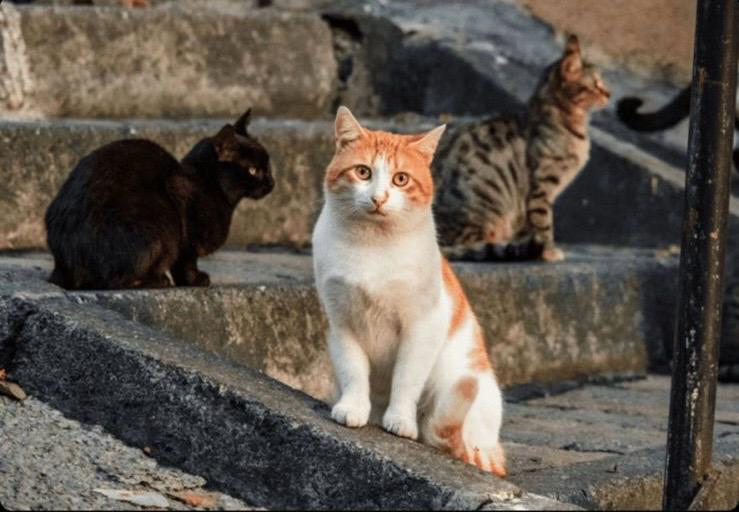

onganimals
Recuperando animais de ruas!
- contatos
- projetos_sociais
- ficha de cadastro
- Responsabilidade: atuamos com comprometimento e ética em cada resgate e cuidado.
- Transparência: mantemos clareza em nossas ações e uso de recursos.
- Colaboração: acreditamos na força das parcerias e do trabalho coletivo.
- Educação e conscientização: promovemos o respeito e a adoção responsável por meio da informação.
- Sustentabilidade: buscamos práticas que garantam o bem-estar animal e o equilíbrio ambiental.
Projetos Sociais
A ONG foi fundada em 2007, a partir do projeto Tudão, que reuniu voluntários em um dia totalmente dedicado a percorrer as ruas em busca de animais que precisavam de ajuda ou estavam sofrendo maus-tratos. Esses animais são resgatados, levados ao abrigo, recebem todos os cuidados necessários e, posteriormente, são encaminhados para adoção, com o objetivo de encontrar um novo lar e uma família amorosa para cada um deles.
Missão
Resgatar, reabilitar e proporcionar uma nova chance de vida a animais de rua de todas as espécies, garantindo-lhes cuidado, amor e dignidade, enquanto promovemos a conscientização sobre o respeito e a responsabilidade com os animais.
Visão
Ser referência no resgate e proteção animal, construindo uma sociedade mais empática, onde todos os animais tenham o direito a uma vida segura, saudável e livre do abandono.